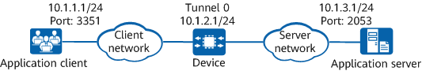

Networking Requirements
In the network shown in
Figure 1, an enterprise user (application client) connects to the network through a device, and an application server is deployed on the network to provide services for application clients. The user wants to gain insights into the network performance indicators such as network delay and packet loss rate of TCP applications, so as to optimize the network accordingly. To achieve this, TCP FPM can be enabled on the device to collect network performance data of TCP applications in real time.
Figure 1 Network diagram of TCP FPM
Configuration Roadmap
- Enable TCP FPM.
- View TCP FPM statistics.
Procedure
- Enable TCP FPM.
<Huawei> system-view
[Huawei] sysname Device
[Device] interface Tunnel 0
[Device-Tunnel0] ip binding vpn-instance vpn1
[Device-Tunnel0] tunnel-protocol sd-wan
[Device-Tunnel0] ip address 10.1.2.1 24
[Device-Tunnel0] sd-wan service enable
[Device-Tunnel0] tcpfpm enable
[Device-Tunnel0] return
Verifying the Configuration
# Run the display tcpfpm session all command on the device to view TCP FPM statistics.
<Huawei> display tcpfpm session all
Index DstIP(Port) SrcIP(Port) Loss(%) SND(ms) CND(ms) VpnName Application
1 10.1.3.1(2053) 10.1.1.1(3351) 0 12 4 vpn1 FTP
Configuration Scripts
#
sysname Device
#
interface Tunnel0
ip binding vpn-instance vpn1
ip address 10.1.2.1 255.255.255.0
tunnel-protocol sd-wan
tcpfpm enable
sd-wan service enable
#
return